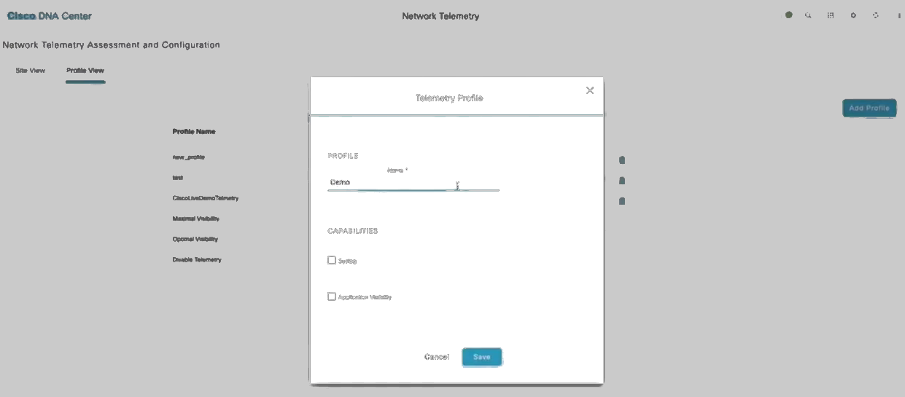
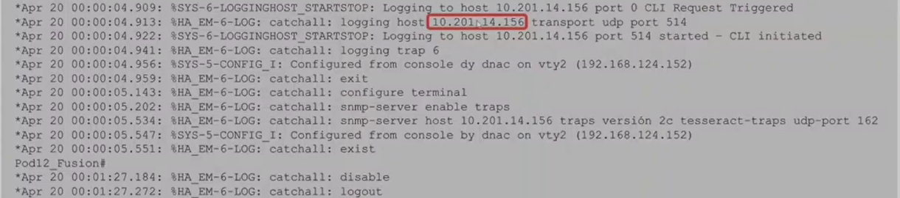

Cisco DNA Center (DNAC) is the orchestration platform for designing, provisioning, and implementing policies on the network. It provides visibility into the network and an understanding of the user experience of network services. It collects telemetry from existing multiple devices, applications and users, applies advanced algorithms to uncover correlated insights and suggest remediation. This helps in minimizing troubleshooting time by identifying the root cause of issues on the network. DNAC generates health scores for client, network and applications in use; these are complied from different metrics. With Cisco DNA:
The DNA Assurance landing page provides summaries of network and client health. The network health displays health summaries (in percentages) of switches, routers, wireless LAN controllers, and access points. The client health displays summaries of wireless and wired clients.
Cisco DNA includes guided remediation provides suggestions for correcting a problem
The following discussion on Cisco DNA Center is based on version 2.2.2.8 released on 17/June/2022. Other Cisco DNA Center releases can be found here.
The DNA Center version in use can be determined by clicking the "About" icon at the top right.
SD-Access fabric, in a campus network enables the maintenance of network policies to a roaming user regardless of their location. SD-Access uses IS-IS as the underlay protocol and LIST-VXLAN+TrustSec in the overlay protocol to allow users with their devices to be onboarded onto the network and maintain their same network configuration anywhere on the network.
The SD-fabric is created by DNA center. A guided workflow is used to setup the entire SD-fabric. There are four in total. The following is a simplified sitemap of the DNA modules:
To be able to gain insights into the performance of the network, DNA should be setup and devices enrolled. The procedure to setup DNAC is as follows:
Network devices such as APs, switches, routers, firewalls are enrolled into DNAC.
These devices typically run on IOS-XE such as catalyst 9000
series switches, ISR-4400 series routers.
DNA center communicates with these devices using programmability protocols
NETCONF/RESTCONF. When DNA Center communicates with devices using NETCONF/RESTCONF,
it creates a telemetry subscription through which the devices can stream data
such as CPU, memory utilization, interface counters, ACL counters; basically all output
from show commands are streamed to the DNA Center. DNA Center stores this information
and logs it into a database with the timestamp of occurrence. This enables understanding
these parameters across a time range. The information collected is from network
devices as well as client information.
DNA Center applies machine learning to this collected telemetry information to
provide insights into the network performance and lists any detected issues
degrading the network.
The DNA container hierarchy is divided into groups:
For devices to be managed, they must first be discovered. The discovery feature:
Discovery supports the following types of device discovery:
At least one CLI credential and one SNMP credential is required. Netconf is required for 9800 series switches.
A new device can be added manually through the Inventory tab under the Provisioning module. This is done by selecting the "Add Device" button. The following parameters are required when adding a new device:
Select "View Inventory" to view the newly added devices. To add the device to a site: Select "Actions", then Provision, then "Assign Device to Site". The serial number and device type are displayed to you to confirm the device and as well as the list of all sites. Discovered devices are added to the inventory by DNA. After initial discovery, DNAC maintains the inventory by polling the devices in inventory, by default, every 25 minutes to determine reachability. This can be modified to up to 24 hours. By default, only devices that have been active for less than a day are displayed.
DNAC requires a set of global credentials to use when enrolling the devices into DNAC. These settings are the same as Discovery credential sets:
Credential sets define common global credentials, specified in global container, and instance specific credential sets, specified per container, for network devices in a discovery. Credentials in higher-level containers are inherited by lower level containers. DNAC allows multiple credentials to be specified for a defined credential type. Support for exceptions (non-common) credentials can be included in discovery.
DNAC automation can add missing credential sets to devices upon discovery for example if the CLI credentials are available but SNMP configuration is not working, DNA is able to access the device using the CLI credentials and enable SNMP with the configuration what was not previously functional but entered into DNA during the device enrolment. If multiple credentials are configured, DNA will start with the first credential, then the second, third ... up to the credential that works. DNA will remember the credential that worked for a given device.
Different device types are managed through different credential types:
For discovery to work, the required ports include:
At a minimum, CLI and SNMP details are required for DNAC to discover devices. For SNMPv2c community read-only string is required. For SSH/Telnet device access, the user account should have a privilege level of 15.
The protocol order of the credentials can be specified. The options include SSH and Telnet. If Telnet is enabled, a warning message gets displayed about the insecure nature of Telnet.
In DNAC, these credentials can be added from the Design tab, under the "Network Settings" menu and "Device Credentials" menu item. The credentials can be set for the Global site or lower site in the organizational hierarchy. Credentials configured at the global level will be inherited by the sites under the Global location. If a list of credentials is available for a given site, select the appropriate credential that will be used by clicking the radio button of that corresponding credential.
Device controllability is a feature that is enabled, by default, when adding a device to inventory from the Inventory page or through discovery. Device Controllability operates as follows:
During the network discovery process, there are several changes that DNAC automatically makes to WLCs:
DNAC becomes the network assurance service for that WLC from the start.

There are several changes that DNAC automatically makes to switches during discovery:
If an ACL is configured for SNMP community string, DNAC may remove the ACL during discovery. Remember to add the ACL after the DNAC discovery is complete.
When device discovery is performed with "Device Controllability" enabled, DNAC will enable IP device tracking(IPDT) on discovered devices. IPDT is activated on switch ports operating in the switchport access mode. IP Device Tracking keeps track of connected hosts on a switch. IPDT sends an ARP probe on that access interface to check that the device is alive. This ARP is not propagated out any other port. This helps in tracking where clients are connected in the network. By default, switches use MAC-address tracking for monitoring connected hosts. If a device is connected to the network but is silent (not accessing network services) MAC addresses timeout in the MAC address cache on the switch. This will assume that the device is off the network. With IPDT, the MAC address of a connected device is not allowed to timeout. When the MAC address timer is close to expiry, an ARP probe is sent out that particular access port that the device is connected to and when the device responds, the MAC address timer is reset.
There are several changes that DNAC automatically makes to routers during discovery:
When device discovery is completed, a newly added device is placed under the Global site and categorized under "unassigned devices". Unassigned devices not not have a site allocation. Assurance requires devices to be assigned to a site in order to push telemetry. It is important to assign a device to a site. This is because network telemetry may not be received for the device if it is not assigned to a site. Assigning a device to a site does not push configuration to the device.
Telemetry profiles can be configured to send Syslog, and NetFlow configs to supported devices. Telemetry profiles include two predefined profiles that send telemetry to DNA and one profile that does not send telemetry. Custom telemetry profiles can be added. The three default telemetry profiles for use in provisioning assurance configurations include: maximal, optimal and disable.
| Profile Name | Syslog level | NetFlow version |
| Maximal | Informational | IPFIX |
| Optimal | Informational | |
| Disable |
Profiles can be assigned at site or device level. The default profile is Disable telemetry. The recommendation is to apply Maximal to routers and Optimal to switches.
Custom telemetry profiles can also be created in exceptional use-cases where the best practice telemetry profile settings need to be altered. If custom telemetry profiles are configured and the device does not support the telemetry profile configurations e.g. NetFlow, then DNA will produce a notification message. The supported telemetry configuration will be pushed to DNA and the unsupported telemetry will not be pushed.

Telemetry profile push is used to assign profiles to specific devices and validate configuration push. If the predefined telemetry profiles are used, telemetry information gets pushed to DNAC immediately after being applied.
Verify assurance dashboards are being populated with expected telemetry data. DNA sets itself up as a syslog server to be able to collect data from that device.

Netflow is required for Application Health data. DNA provisioning of NetfFlow is only supported on routers running IOS v16 or newer. The current behaviour is for NetFlow to be enabled on all interfaces of routers.

The landing page of DNA Center is the DNA Dashboard. The information displayed in the dashboard is aggregated over the last 24 hours.
The DNAC issue dashboard is a centralized view of network issues allowing one to quicky identify and diagnose network problems. It provides insights into problems and provides recommendations on how to resolve the problems. By default, issue data is saved for up to 30 days.
The issue table contains a list of issues categorized by priority. Additionally, some issues are flagged as being identified by AI.
Issues have three types of status: open, resolved, and ignored. When the issue is ignored, it is ignored for a specific time period. An issue can be resolved in two ways; by manually changing the status, or the auto-resolution mechanism. Support for autoresolution is being added for more issues.
Issues are classified according to priority. The options are:
The Network Health section of the DNA Assurance center displays the health status of network equipment such as routers, switches, wireless LAN controllers(WLC), and access points (AP). It gives a snapshot of the device health of the past 15 minutes and 24 hours. Network devices are categorized based on their role or type i.e., wireless, core, access, distribution switch, router.
The Network Health page can be accessed via the Network Devices section of the DNA Center Assurance. This view provides an aggregated score of the health of monitored devices for the defined time range.
|
|
|
|
|
|
Device 360 gives a full view of the device displaying the most detailed raw telemetry data gained about a device. You can monitor and preview the health parameters of the network. Device 360 displays the following parameters:
In the case of APs, the additional information collected includes:
Device 360 provides a list of issues experienced by the network device. The timeline of the issues can be viewed by selecting the appropriate date/time. Suggested actions are provided on how to resolve any identified issues.
Device 360 includes a physical neighbor topology of the device. For a switch, it displays the clients connected and any uplink devices. This helps in determining the end-points that are affected when the switch or uplink device experiences a problem. The health score of the neighbors can also be determined by clicking on the neighboring devices in the physical topology.
Device 360 supports a pathtrace which enables performing a connectivity test between the device and a specified destination. It uses information learned from the network topology. It queries devices to, among other things, determine the availabilty of equal-cost multipaths. If intermediate devices are not managed e.g. MPLS, a cloud symbol is used to symbolize the unknown intermediate unmanaged devices.
DNA can also be used to collect SNMP traps and informs. DNA is the default SNMP collector. It pools network devices to gather telemetry data. By default, the following information is collected by SNMP:
To get a view of the health status of the clients. Client devices are segregated between wired clients and wireless clients. A broken-down view of every step of the onboarding process is displayed making it possible to determine if the network infrastructure is causing the fault or the network service such as AAA.
Displays details of a user's network connected devices and their user experience.
Application health dashboard processes application data and gives an insight into application performance. Application Health page displays information about how your applications are performing across the entire network. Applications are classified as business-relevant, business-irrelevant, and default. Cisco application visibility is used to classify the applications. This classification is done based on the NBAR (Network-based application recognition). Application Health enables the monitoring of application statistics and application response. Application experience is based on NetFlow records exported by the routers. It correlates KPIs sources of the network to identify the problem domain faster and make issue resolution recommendations. Application health includes vital information such as business-class, traffic class, packet-loss percentage and latency. Application health can be accessed under DNA Assurance dashboards and under Application Health. Some applications on the network can be defined as business relevant.
To receive application telemetry, ensure that:
Software management allows the installation, upgrade, and patching the embedded operating system running in managed devices such as switches, routers, APs, etc. DNAC stores and categorizes software images. It makes recommendations on latest software images based on vulnerabilities. It allows the standardization of software images for devices on the network.
An SMU is a package that provides point fixes and rolls security resolutions to software images that have already been published. DNAC supports SMUs for IOS-XE versions 16.x onwards.
SMUs can be helpful:
DNAC stores software images and software maintenance updates for the network devices. The image repository provides the following functions:

DNAC manages software and VNF (virtualization network functions) images. It also supports the management third-party images. DNAC image management feature is accessible as a page under the Design module.
The DNA "Image Repository" page displays all images available. The "Delete" icon under "Action" indicates that an image has been downloaded to DNAC.
CCO credentials are the Cisco credentials for downloading firmware. These credentials can be used by DNA to access firmware repository. These credentials are configured in the DNAC "System Settings" page:
The following page displays image details with and without CCO configured:
With CCO configured, additional information about the image is provided compared to images without CCO information. If the CCO credentials are provided, DNA provides guidance on the latest firmware updates and recommended images for a device.
When downloading image updates, the "Show Tasks" button shows download progress for firmware:
DNAC uses the following protocols in their order of preference during the distribution of software images:
| Latency | <200ms between DNAC and devices |
| Distribution server | DNAC internal storage or remote file server particularly for geo-dispersed sites. |
| Protocol | HTTPS over SCP and SFTP |
| Software Version | The software image to be upgraded may
impact the upgrade process. The duration in the process for IOS-XE 17.3 is as follows:
|
The image upgrade process in DNAC is a granular one. It supports image distribution and activation at once on demand. It allows the scheduling of these activities on individual timeframes to go hand-in-hand with the organization's maintenance windows. DNAC regularly monitors the network for compliance with the standardized images and raises notifications for devices with images that deviate from the set standards. DNAC makes pre and post installation/upgrade checks to ensure that integrity of the network is intact.
Most of these steps happen automatically
Devices requiring image upgrades are can be viewed under the Inventory tab under the Provisioning module with a focus of "Software Images". The list of devices in inventory displays devices that require software image updates.
An image update readiness check is performed before the software image image upgrade takes place.

When upgrading software images for wireless infrastructure such as access points, and wireless LAN controllers, the protocol used for transfer of the images is SFTP. Additional support during wireless infrastructure image updates includes:
For wired infrastructure such as switches, routers, firewalls, the following support is provided by DNAC during image upgrade:
When an image update has been activated for a device, DNA pushes the image to the device storage and starts the installation of the image. After a device completes an image update, DNA creates a wait period during which it expects the device to reboot and load the updated image. During this wait period, DNA may not update the status of the image on the device until after the wait period expires. DNA then carries out post-installation checks before updating the status in the DNA interface.
DNAC Assurance is the module of DNA that provides support with monitoring and troubleshooting of the network infrastrucure, client devices, and application performance. Most of the discussed features of DNAC assurance are used for troubleshooting purposes.